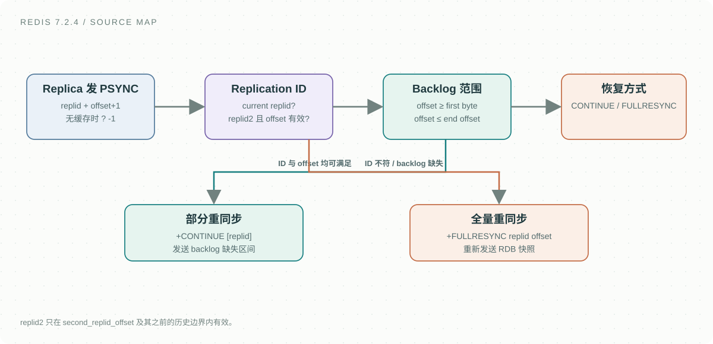
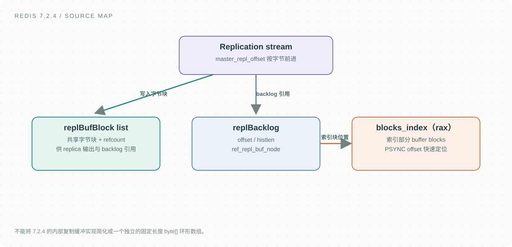
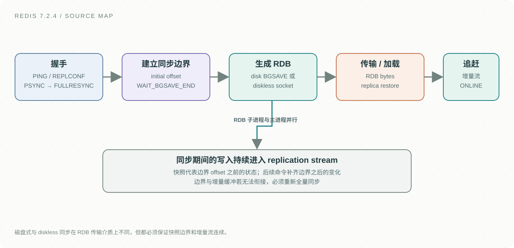

Chapter 20 / Redis 7.2.4 Source Anatomy
主从复制：PSYNC、复制积压缓冲与全量同步
从 replication ID/offset、PSYNC 部分同步判定、共享 replBufBlock 与 rax 索引，到 RDB 全量同步和增量追赶，解释 Redis 7.2.4 复制链路。
复制的本质：把主节点的数据变化变成有序字节流
Redis 主从复制（master–replica）不是把每个 key 定时拷贝一遍。主节点把改变数据集的操作、过期删除和淘汰等变化编码成复制流；副本按顺序应用这条流，使自己的数据集逐渐追上主节点。默认复制是异步的：主节点不会为每条写操作等待所有副本完成处理后才回复客户端。
副本断线后会尝试恢复之前的复制历史。如果主节点仍保存了副本缺失的字节区间，双方可以通过 PSYNC 部分重同步；若历史 ID 不匹配或积压区间已经被裁剪，则需要重新全量同步。理解这条链路必须同时看 replication ID、offset 和 backlog。
replication ID + offset：复制历史与逻辑位置
主节点有一个随机生成的 replication ID，用来标识一段数据集历史；master_repl_offset 则随着复制流字节向前推进。一个 (replid, offset) 组合描述某个历史中的数据集位置。offset 是字节位置，不是执行过多少条命令；命令编码长度不同，offset 增量也不同。
Redis 7.2.4 同时维护 replid 与 replid2。副本提升为主节点后，新的主节点会保留一段旧历史 ID 作为 secondary ID，并用 second_replid_offset 限定其有效边界。这样原主节点的其他副本在一定条件下仍能向新主节点部分同步；但旧 ID 不会无限期地代表新历史。
| 字段 | 语义 | 不能误解为 |
|---|---|---|
replid | 当前复制历史标识 | 节点 hostname 或实例 ID |
replid2 | 上一个可衔接的历史 ID | 永久有效的第二主 ID |
second_replid_offset | 旧 ID 可接受的 offset 上界 | 当前主节点 offset |
master_repl_offset | 复制流当前字节位置 | 命令数量或 key 数量 |
PSYNC：先匹配历史，再验证缺失字节是否还在 backlog
副本重连时，如果有 cached master 状态，就发送 PSYNC replid offset+1；如果没有可复用历史，则发送 PSYNC ? -1，要求全量同步。主节点的 masterTryPartialResynchronization() 首先检查 replid 是否匹配当前 ID，或匹配在有效边界内的 replid2；随后检查 backlog 是否覆盖请求 offset。

若两个检查都通过，主节点回复 +CONTINUE（PSYNC2 能携带新 replid），然后从请求 offset 起发送缺失的复制流字节。若历史 ID 不符、旧 ID 超过有效边界、backlog 不存在或请求 offset 已早于 backlog 起点，则部分同步失败，进入全量同步。
这里 offset 的含义非常关键：副本请求的是“我接下来需要的字节位置”。因此代码会比较请求 offset 与 backlog 的起始位置及 offset + histlen 末端范围，而不是比较副本缺了多少条命令。
Redis 7.2.4 的 backlog：共享复制块与 rax 索引
概念上常把 replication backlog 画成固定长度的环形缓冲区，便于解释“只保留最近 N 字节”。但 Redis 7.2.4 内部实现比一个简单 byte array 更丰富：replBufBlock 组成共享复制缓冲块列表，多个 replica 客户端和 backlog 可以通过引用计数共享这些块；replBacklog 保存起始 offset、历史长度和引用节点。

为避免在很长的 block list 中线性查找，Redis 用 rax 对一部分复制缓冲块建立索引。慢副本可能继续引用旧 block，使物理内存回收晚于逻辑 backlog 窗口裁剪；因此配置 repl-backlog-size 是一个逻辑保留目标，不代表所有相关内存都始终严格等于该数字。
当没有副本连接时，backlog 可按 repl-backlog-ttl 等策略在一定时间后释放；重新有副本时若 backlog 不存在，会建立新的复制历史并改变 replid。故 backlog 大小与保留时间直接影响短暂断线后还能否部分同步。
全量同步：RDB 快照与快照边界之后的增量流
部分同步失败后，主节点把副本置为等待全量同步的状态，回复 +FULLRESYNC replid offset，并启动或复用适合的后台 RDB 保存任务。replicationSetupSlaveForFullResync() 记录初始 offset，进入 SLAVE_STATE_WAIT_BGSAVE_END，并重置复制输出中的 SELECT 状态。

RDB 子进程保存期间，主节点继续接收写入；这些写入必须在快照完成后作为增量流发送给副本。RDB 代表初始同步边界之前的状态，复制流补齐边界之后的变化。副本收到快照后加载数据，再应用增量流并进入 ONLINE。若同步过程中连接或快照失败，双方需要重试而不是假装已完成。
多个副本同时请求全量同步时，主节点可以复用同一个后台 BGSAVE；不是每个副本都必然启动一个独立 fork。若现有 BGSAVE 的目标类型或副本能力不兼容，则新副本可能等待下一次可用同步任务。
Diskless replication：RDB 不必先落地为本地文件
常规全量同步可以由主节点生成 RDB 文件，再把文件内容传给副本；开启 repl-diskless-sync yes 且副本支持 EOF marker 时，子进程可以直接向副本 socket 发送 RDB 流，减少磁盘作为中间介质的压力。Redis 7.2.4 还通过 repl-diskless-sync-delay 等设置允许在启动子进程前等待更多副本加入。
Diskless 改变的是 RDB 传输目标，不改变同步正确性所需的快照边界与增量流。副本侧的 repl-diskless-load 还控制从 socket 接收 RDB 时如何加载旧数据集；不同配置可能选择清空、在空库加载或 swapdb 等路径。不要把“diskless”解释成“没有 RDB”或“副本不需要加载快照”。
实验：启动 master/replica 并观察初始同步和 PSYNC
在 Redis 7.2.4 本地构建目录中启动两个独立实例，分别使用不同数据目录。先观察第一次全量同步，再通过关闭 replica 连接并让 master 继续写入，观察自动重连是否成功进行部分同步。此实验依赖本机端口可用，并应在无生产数据的隔离环境执行。
tmp=$(mktemp -d)
mkdir -p "$tmp/master" "$tmp/replica"
./src/redis-server --bind 127.0.0.1 --port 6391 \
--dir "$tmp/master" --save "" --appendonly no \
--repl-backlog-size 1mb
./src/redis-server --bind 127.0.0.1 --port 6392 \
--dir "$tmp/replica" --save "" --appendonly no \
--replicaof 127.0.0.1 6391
# 等待 master_link_status:up 后：
./src/redis-cli -p 6391 SET repl:phase initial
./src/redis-cli -p 6391 INFO replication
./src/redis-cli -p 6392 INFO replication
# 断开主节点上的 replica 连接，副本会自动重连
./src/redis-cli -p 6391 CLIENT KILL TYPE replica
./src/redis-cli -p 6391 MSET repl:after:1 one repl:after:2 two
# 等待 replica master_link_status 恢复为 up
./src/redis-cli -p 6392 GET repl:after:1
./src/redis-cli -p 6391 INFO replication
./src/redis-cli -p 6392 INFO replication
./src/redis-cli -p 6392 SHUTDOWN NOSAVE
./src/redis-cli -p 6391 SHUTDOWN NOSAVE
rm -rf "$tmp"首次连接应发生 FULLRESYNC；短暂断线且缺失字节仍在 backlog 时，日志中应能看到部分重同步被接受。若 backlog 被释放、offset 超出保留范围或 replid 不匹配，则可能再次全量同步。实验应以服务端日志、INFO replication 和副本 key 状态共同判断，而不是只看 TCP 连接恢复。
复制不是强一致：ACK、WAIT 与持久化边界
副本会周期性发送 REPLCONF ACK offset，主节点据此知道副本处理到哪个复制流位置。客户端可使用 WAIT numreplicas timeout 等待指定数量的副本确认，但 WAIT 不会把 Redis 变成具有强一致性共识协议的 CP 数据库：故障切换时，已确认写入仍可能因具体故障顺序和持久化状态而丢失。
复制、RDB/AOF 持久化和 Sentinel/Cluster 故障转移是相互配合但不同的机制。复制提升可用性和读扩展能力，但不能替代持久化备份；主节点关闭持久化后自动重启为空库，副本可能继续同步这个空数据集，导致数据被覆盖。生产设计必须把写确认、磁盘持久化、复制延迟和故障切换策略分开定义。
固定版本源码与参考
实现细节以 Redis 7.2.4 为准；官方最新文档用于核对概念与运维语义，不能反向替代版本锁定的源码证据。